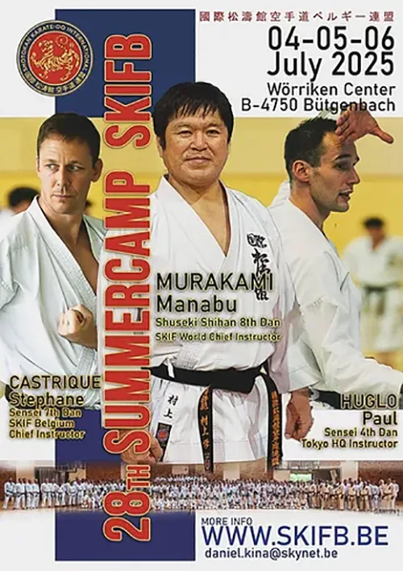

Worriken Sports Center ven. 04 juil. |
Heure et lieu
04 juil. 2025, 15:00 – 06 juil. 2025, 14:00
Worriken Sports Center, Worriken 9, 4750 Bütgenbach, Belgique
À propos de l’évènement
Please click on the following links for more information and registration : details – planning – Worriken map – registration
Registration opens on 1 January and closes on 31 March 2025
Program : Our 28th edition of the SKIF-B Summer camp 2025 will be held from Friday July 4 until Sunday July 6, 2025 at Bütgenbach (Worriken Sports Center). Instructors: Manabu Murakami Shuseki Shihan 8th dan, Stephane Castrique Sensei 7th dan and Paul Huglo Sensei 4th dan
Bookings and payment for the accommodation and food package must be made via the following link: 28th Summer Camp SKIF Belgium.
! No reservations by e-mail or telephone
Fee : For the 4 training sessions : 60€ – members SKIF and 80€ – non-member SKIF – to be paid on site – cash only – no bancontact
Individual course : 20€/ course – members SKIF and 25€/ course – non-member SKIF – to be paid on site – cash only – no bancontact
Accomodation and food : 160€ for 2 nights full board
For more details please consult the PDFs : details – planning – Worriken map
Location : Worriken Sports Center – Worriken 9 – 4750 Bütgenbach – Belgium
Contact : Daniel Kina – daniel.kina@skynet.be – +32 475 56 40 52
Stephane Castrique – stephane.castrique@gmail.com – +32 478 30 16 13
Stephan Van Lerberghe – stephan.vanlerberghe@gmail.com – +32 495 32 19 00